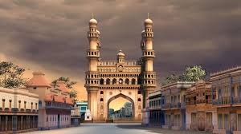
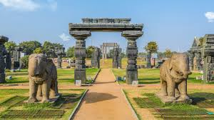
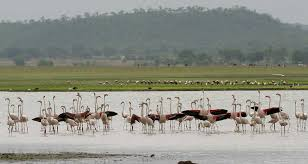

Hyderabad

The state capital and a major technology hub, famous for its historical landmarks like the Charminar, the massive Golconda Fort, and the opulent Chowmahalla Palace, offering a blend of old-world charm and modernity.
Warangal

Known for its rich history under the Kakatiya dynasty, featuring the UNESCO World Heritage Kakatiya Rudreshwara (Ramappa) Temple and the Warangal Fort ruins with its stunning Kakatiya Kala Thoranam (Arch).
Nagarjuna Sagar Dam

One of the world's largest masonry dams, built across the Krishna River. It's also known for the nearby Nagarjunakonda, an island museum with Buddhist relics.
Pocharam Wildlife Sanctuary

A dense forest region surrounding the Pocharam Dam and Lake, known for its diverse wildlife, including leopards and various bird species.
Khammam Fort